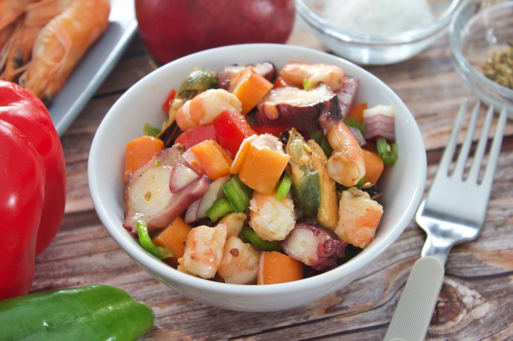
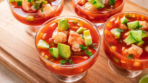
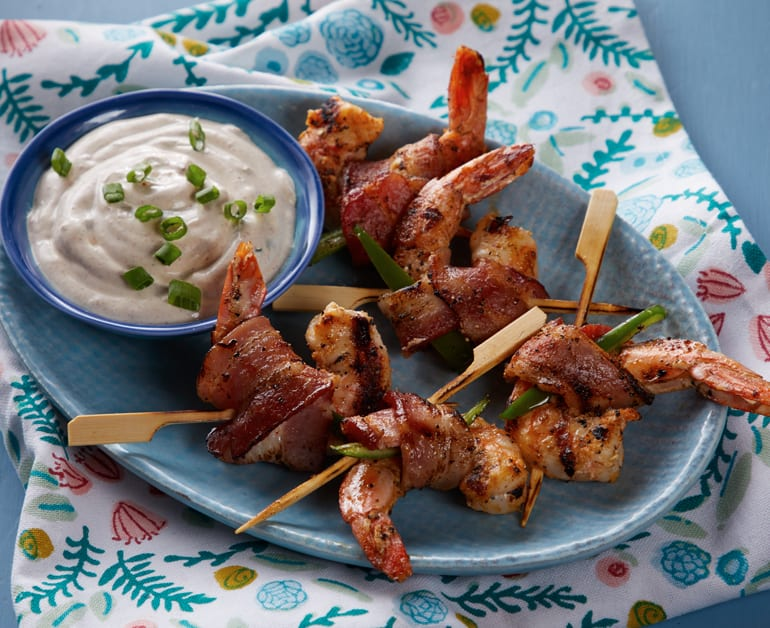
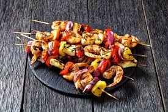
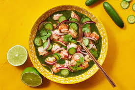
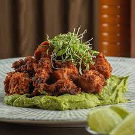
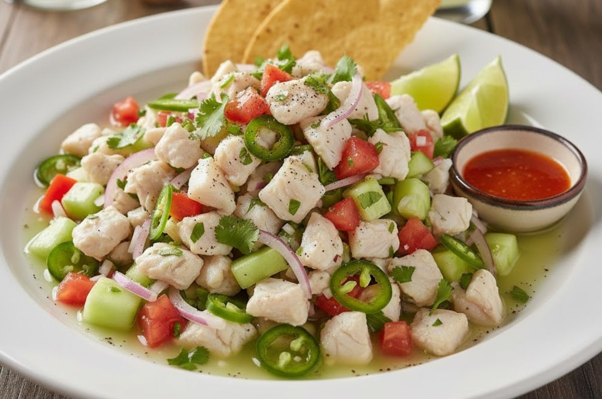
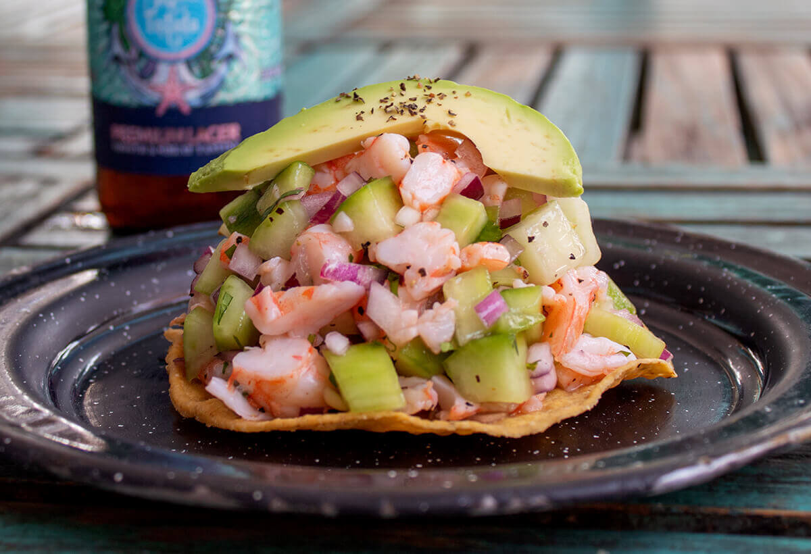

Salpicón variado
Tenemos los deliciosos guisos de raya, cazón, pescado y jaiba.

Coctel de Camarón
Preparado con camarones, catsup, Clamato o jugo de naranja, jitomate, cebolla y aguacate.

Camarones envueltos con tocino
Camarones grandes envueltos en rebanadas de tocino. Horneados, a la parrilla o fritos.

Brochetas de Camarón
Camarones marinados con pimientos y cebolla, con un sabor ahumado, cítrico o especiado.

Aguachile
Camarones crudos, marinados al momento en jugo de limón, chiles, pepino y cebolla morada.

Chicharrón de pulpo
Tentáculos de pulpo cocidos y fritos con textura crujiente por fuera y suave por dentro.

Ceviche
Mariscos crudos marinados en jugo cítrico (limón o lima), sal, cebolla y ají. Acompañado de galletas saladas.

Tostadas de mariscos
Cubiertas con mariscos mixtos (camarón, pulpo, jaiba, ceviche) marinados en limón, especias y vegetales.